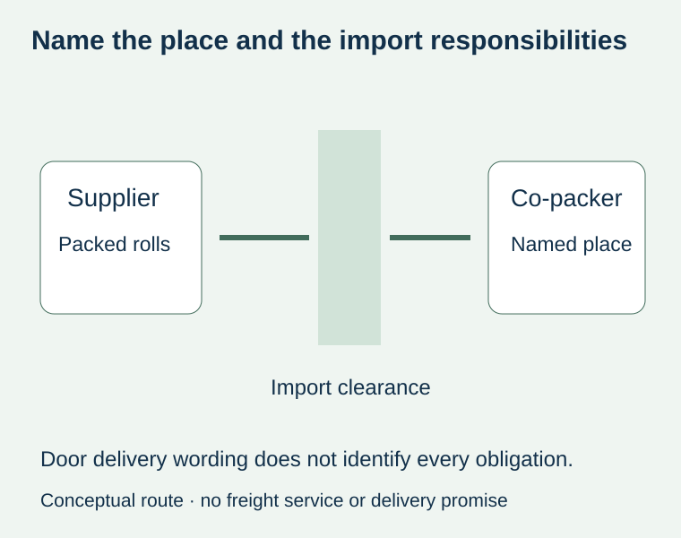
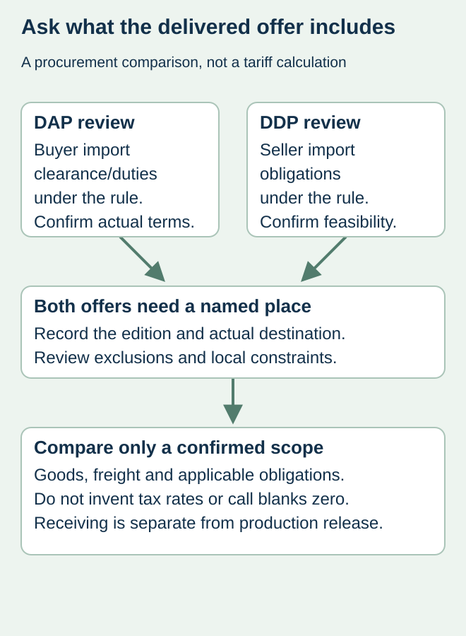

Two suppliers offer delivery of food-label rolls to the same co-packer. One writes DAP; the other writes DDP. The buyer compares the totals as if both include the same import work. A carton reaching an address and an offer covering import clearance and duties are different propositions.
Obtain the precise delivery rule, edition and named place, then confirm who handles and pays for import clearance under the actual arrangement. Do not expand “door to door” into “all taxes included.” This site’s worldwide shipping coordination does not establish that any particular DDP arrangement is available.


Use the abbreviation as a starting point for clarification
The International Chamber of Commerce’s Incoterms 2020 checklist distinguishes DAP from DDP, including the allocation of import-clearance obligations and duties. Under DAP these are generally for the buyer; under DDP the seller takes the relevant import obligations. Have the responsible freight or trade adviser confirm the actual rule and country requirements for the transaction.
ICC also highlights that local regulatory barriers can make a seller’s performance of DDP import obligations difficult. Ask who will actually act in the permitted import role and how the proposed route works. A seller should not simply attach the letters DDP to an offer without a workable arrangement.
Write the delivery place precisely
Record the intended facility and agreed place, together with the Incoterms edition and any express contractual additions. A country name alone can leave the operational endpoint unclear. If the label rolls must reach a named co-packer rather than the brand’s office, put that receiving destination in the commercial record.
| Item to reconcile | What the proposal should identify | Keep separate |
|---|---|---|
| Delivery basis | Exact rule, edition and named place | A general marketing phrase |
| Import handling | Responsible party and practical clearance arrangement | The courier’s tracking destination |
| Taxes and fees | Confirmed included/excluded amounts or obligations | A guessed universal duty percentage |
| Receiving event | Facility, unloading/receipt arrangements and contact route | Authorization to use labels on the line |
| Exceptions | Local constraints and additional agreed terms | An assumption that the acronym settles every contract issue |


Compare the confirmed scope before comparing totals
For a hypothetical sauce-label order, an importer may need to budget costs excluded from a DAP offer while another proposal purports to include import handling. Ask for actual confirmed information from the responsible parties. Do not assign a convenient tax rate, invent a clearance fee or call an unresolved cost zero. Any numerical comparison should preserve the original currencies and quotation dates.
Incoterms do not establish every aspect of the sale, such as the complete payment arrangement, product conformity or the right to use a received roll. Keep those decisions in the relevant agreement and release record. This worksheet organizes procurement questions; it does not determine a disputed contract or provide a tariff classification for label materials.
Separate a shipping commitment from a production promise
The date on which labels can leave the factory depends on the actual production and approval state. The date they can be received also depends on the transport and clearance route. Confirm both rather than treating a delivered-price abbreviation as an arrival-time guarantee. Use the lead-time milestone guide to identify the event the supplier has actually confirmed.
Before ordering, ask the supplier and the receiving party to acknowledge the agreed destination and their responsibilities. If a proposal changes from one delivery basis to another, review the total and relevant obligations again. Keep the amended offer with the label specification so purchasing does not approve the new price while operations follows the old import plan.
Discuss the unresolved label requirement
Send the receiving country/postcode, consignee details through the appropriate private route, required arrival event and the exact delivery wording in the offer. Confirm available shipping arrangements for the project. Prepare a label specification inquiry. The contact page opens an email draft and lists email or WhatsApp for attachments. Supply, proof options, testing, pricing and timing require project confirmation.